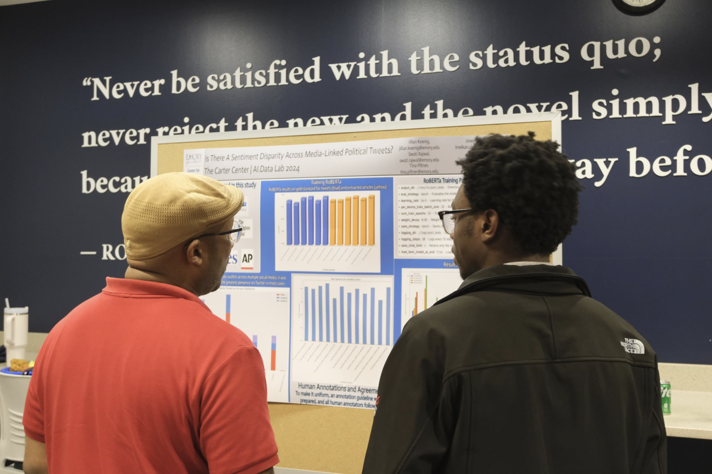

AI Data Research Lab Experience
Applied NLP and transformer-based models to analyze large scale election related media data in a research setting. Supported research workflows involving data cleaning, text classification, trend analysis, and insight extraction.
Tech: Python, NLP, RoBERTa, transformer models, data analysis
View Summary